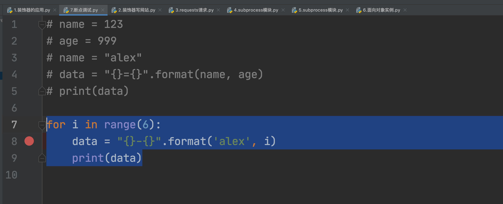

day07 复习和答疑¶
不讲新课，只做答疑和知识点复习。
今日概要：
- 答疑
- 知识点复习
- 作业问题
1.答疑¶
装饰器的使用方法，写作业不知道怎么能用上
requests模块，模拟浏览器发请求，接收不到需要的数据
讲解下函数的具体用例(比如将之前的作业利用函数来实现)
分享下企业常用Python套路(分享下做Python开发的公司项目)
subprocess想听老师详细详细讲一讲，因为运维用的挺普遍的
怎么把面向对象学好啊，感觉学的有点懵比
讲的内容都会，但是做作业就没有思路，有没有什么方法可以借鉴一下，除了多练习
1.1 装饰器应用¶
- 现阶段：装饰器伪命题。
"""
xx平台的开发：登录、查看信息、我的资料，其中查看信息、我的资料是需要用户登录成功之后，才能观看。
"""
# 当前登录用户（未登录时None，已登录时就是当前的用户名）
CURRENT_USER = None
def outer(func):
def inner(*args, **kwargs):
# 判断，用户是否已登录。
if CURRENT_USER == None:
print("未登录，无权查看")
return
return func(*args, **kwargs)
return inner
def login():
""" 用户登录 """
user = input("用户名：")
pwd = input("密码：")
if user == 'alex' and pwd == 'sb':
print("登录成功")
global CURRENT_USER
CURRENT_USER = user
else:
print("用户名或密码错误")
@outer
def my():
""" 我的资料 """
print("我的资料")
@outer
def info():
""" 查看信息 """
print("查看信息")
def run():
print("欢迎使用xxx系统")
func_dict = {"1": login, '2': my, '3': info}
while True:
print("1.登录；2.我的资料；3.查看信息；")
choice = input("请选择序号：")
func = func_dict.get(choice)
if not func:
print("用户输入错误")
continue
func()
if __name__ == '__main__':
run()
- web框架：使用到装饰器。
"""
pip install flask
"""
from flask import Flask
app = Flask(__name__)
# 本质，就是将 /index 和 Python函数创建对应关系
@app.route('/index')
def index():
# 判断用户是否已登录
# 未登录，跳转到登录页面
# 已登录，则继续向下访问
return "首页"
# 本质，就是将 /index 和 Python函数创建对应关系
@app.route('/my')
def my():
# 判断用户是否已登录
# 未登录，跳转到登录页面
# 已登录，则继续向下访问
return "我的资料"
# 本质，就是将 /index 和 Python函数创建对应关系
@app.route('/login')
def login():
return "登录页面"
if __name__ == '__main__':
app.run()
1.2 requests获取数据¶
import requests
res = requests.get(
url="https://www.zhihu.com/api/v4/answers/2265266340/root_comments?order=normal&limit=20&offset=0&status=open"
)
print(res.text) # 无法获取数据
import requests
res = requests.get(
url="https://www.zhihu.com/api/v4/answers/2265266340/root_comments?order=normal&limit=20&offset=0&status=open",
headers={
"user-agent": "Mozilla/5.0 (Macintosh; Intel Mac OS X 10_15_7) AppleWebKit/537.36 (KHTML, like Gecko) Chrome/96.0.4664.55 Safari/537.36"
}
)
print(res.text) # 获取到数据
1.3 函数的应用¶
choice = input(">>>")
if choice == "1":
写登录的代码
elif choice == "2":
写查看信息代码
elif choice == "3":
我的资料代码
上述实现方式可读性差。
def f1():pass
def f2():pass
def f3():pass
choice = input(">>>")
if choice == "1":
f1()
elif choice == "2":
f2()
elif choice == "3":
f3()
初学者，不要想着一次性拆分非常合理。
- 整体从大的方面拆。
- 函数里面重复的代码出现，再讲重复的抽离出来写成另外一个公共的函数，让其他调用者去使用。
案例：扑克牌。
注意 ：代码超过一屏 或 有功能功能，才用函数。
1.4 subprocess模块¶
import subprocess
res = subprocess.getoutput("df")
print(res)
res = subprocess.check_output("df", shell=True, cwd="跳转到指定目录")
print(res)
知识点的补充：
- 实时数据获取
import subprocess
obj = subprocess.Popen('ping www.baidu.com', shell=True, stdout=subprocess.PIPE)
# 去管道中读取所有的数据
# res = obj.stdout.read()
# print(res)
while True:
res = obj.stdout.readline()
print(res.decode('utf-8'))
- 实时输入和实时错误（线程）
import subprocess
obj = subprocess.Popen('python3.9 -i', shell=True, stdout=subprocess.PIPE, stdin=subprocess.PIPE,
stderr=subprocess.PIPE)
# stdin，输入指令 print(1+3)
obj.stdin.write("print(1+3)\n".encode('utf-8'))
obj.stdin.flush()
# stdout，读取内容
line = obj.stdout.readline()
print(line.decode('utf-8'))
# stdin，输入指令 print(1+3)
obj.stdin.write("print(4+3)\n".encode('utf-8'))
obj.stdin.flush()
# stdout，读取内容
line = obj.stdout.readline()
print(line.decode('utf-8'))
import subprocess
import threading
import time
obj = subprocess.Popen('python3.9 -i', shell=True, stdout=subprocess.PIPE, stdin=subprocess.PIPE,
stderr=subprocess.PIPE)
def read_task():
while True:
# stdout，读取内容
line = obj.stdout.readline()
if line:
print(line.decode('utf-8'))
# 创建一个线程（人），让他专门去执行read_task函数，函数内部源源不断的读取stdout
t = threading.Thread(target=read_task)
t.start()
# 我，专门写
while True:
code = input("请输入代码：") # print(4+3)
code_line = "{}\n".format(code)
obj.stdin.write(code_line.encode('utf-8'))
obj.stdin.flush()
time.sleep(2)
1.5 面向对象¶
线上的同学。
在Python中想要进行项目的开发：
- 函数式编程，单独函数做开发完全没问题。【更好理解，简单，绝大部分的功能】
- 面向对象编程，单纯用面向对象做开发完全没问题。【初学者不太友好，复杂】
在你们此时此刻学习时，应优先用函数来实现，实现完成之后，再用面向对象尝试是否可以更加简洁。
如何学好面向对象对象？
- 三大特性
- 高级用法
应用场景
from flask import Flask, jsonify
app = Flask(__name__)
class BaseResponse(object):
def __init__(self):
self.status = True
self.data = None
self.error = "错误信息"
@app.route('/index')
def index():
# data = {"status": True, 'data': None, 'error': "错误信息"}
# data['data'] = "999"
# data['status'] = False
# return jsonify(data)
data = BaseResponse()
data.status = False
data.data = "999"
return jsonify(data.__dict__)
@app.route('/my')
def my():
data = {"status": True, 'data': None, 'error': "错误信息"}
return jsonify(data)
@app.route('/login')
def login():
data = {"status": True, 'data': None, 'error': "错误信息"}
return jsonify(data)
if __name__ == '__main__':
app.run()
1.6 写作业没思路¶
根据Excel中的会员积分排序和查找。
已掌握
- 数据类型
- 函数
- MySQL
任务：
- 网上搜，直接拿来用。（百度、百度文档），粘贴到程序，试错。（文章描述：...）
- 找朋友帮忙，问怎么做。
- 大致的解决思路
- 程序读取Excel文件，导入到access。
- 在access中执行SQL语句。
- wform中进行展示。
- 逐步去实现：
1. C#打开Excel文件、读取每一行
2. wform中如何上传excel，C#打开Excel文件、读取每一行
3. C#连接access数据，数据插入。
...
分析作业：
- 已知知识点， 未知知识点，单独学习知识点。
- 整体实现的思路
- 中文
- 伪代码
- 设计的功能罗列出来，功能是否都会。
- 套，实现。
- 优化
- 自己优化
- 参考别人代码
- 课堂讲解
2.知识点的复习¶
2.1 基础知识点¶
- 环境搭建
- 写代码
- 注释
- 输入输出
- 变量
- 条件语句/循环语句
- 运算符（面试）
- 一般用法：加减乘除...
- 逻辑运算符
- 普通用法
if user == "alex" and pwd == "123":
pass
- 特殊用法：逻辑运算符前后放值
9 and 8
10 or [11,22]
- 结果是前面的值或后面的值。
- 整个结果取决于那个值，结果是就那个值。
v1 = 9 and 8 -> 8
v1 = 0 and 8 -> 0
v1 = [11,22] and False -> False
v1 = False and True -> False
分析以前的一般用法：
user == "alex" and pwd == "123"
True and False
2.2 数据类型¶
- 字符串类型
- 不可变类型 & 可哈希类型
- 独有功能：upper/lower/strip/split/join/isdecimal（原数据不变）
v1 = "root"
data = v1.upper()
- 公共功能：长度/切片（读取）/索引（读取）/for循环/in判断是否包含。
- 列表类型
- 可变类型 & 不可哈希
- 独有功能：append/insert/remove/pop...
v1 = [11,22,33]
v1.append(44)
- 公共功能：长度/切片/索引/for循环/in判断包含。
v1 = [11,22,33]
v1[0] = 666
- 字典类型
- 元组类型
- 不可变类型 & 可哈希（哈希函数的内部会去获取每个元素，每个元素都要保证可哈希(11,22,[11,22],33) )
- 独有功能：无
- 公共功能：长度/切片（读取）/索引（读取）/for循环/in判断是否包含。
-
整型
-
布尔类型
2.3 函数¶
-
定义函数
-
参数
-
返回值
-
看到return立即终止函数的运行
-
return一个或多个值
-
函数名 本质就是变量
def func():
return 123
# func是一个变量名。
# func()
data_list = [ func, func, func ]
data_list = [ func(), func(), func() ]
# 函数一个非常重要的应用。
func_dict = {"1":login,'2':register}
- 函数作用域
-
闭包
-
装饰器
-
内置函数
2.4 模块¶
- 自定义模块
- 内置模块
- 第三方模块
2.5 虚拟环境¶
- 系统解释器，自己电脑上安装Python解释器（
c:\python39)。
- 虚拟环境，虚拟解释器，根据系统解释器拷贝出多份解释器的环境。
# 虚拟解释器 1
D:\envs\crm
- Scripts
- activate.exe
- pip.exe
- Lib
- site-packages
- ...
- ...
- python3.9.exe
>>>activate.exe
>>>pip install xxx
>>>pip install xxx
>>>pip install xxx
# 虚拟解释器 1
D:\envs\crm
- Scripts
- activate.exe
- pip.exe
- Lib
- site-packages
- ...
- ...
- python3.9.exe
>>>activate.exe
>>>pip install xxx
>>>pip install xxx
>>>pip install xxx
以后在进行项目开发时，一般都是一个项目使用一个虚拟环境。
- 项目A
- 虚拟环境A，将项目所需的所有第三方包和版本。
注意：一定要将三个目录区分开
- 系统解释器，例如：C:\python39
- 虚拟环境（虚拟解释器），例如：E:\envs
- 项目目录，例如：D:\code
案例¶
-
我写项目。
-
给刘冀超
-
代码
-
requirements.txt
-
刘冀超拿到代码后。
-
创建虚拟环境
-
在虚拟环境下安装
requirements.txt中所有的第三方包。 -
使用此虚拟环境运行项目。
问题¶
-
写项目，产品的交付。
-
exe文件，打开之后就是终端操作。
-
桌面应用，pyqt5
-
Web页面，写网站。
-
做进销存管理
-
壳子，做用户交互。
- 用户提交数据，例如：录入数据、删除。
- 给用户展示数据，例如：用户列表、商品列表。
-
做Excel处理时，对Excel里面的进行增删改查。
-
数据库
-
加密和解密 ？
- 字符集
- pycharm断点调试

- 什么是api
- api，官方内部提供的功能。
data = "root"
res = data.upper() # 官方API中提供的功能。
print(res)
- api，就是泛指URL。
https://api.luffycity.com/api/v1/course/actual/?category_id=9&offset=0&limit=5
你给我一个API，我来调用，返回一个数据。
前后端分离会有API
- PEP8规范
- 写项目必不可少：队列、nginx、服务。
- 关于源码
- 关于自动化课程
- 垃圾回收机制
https://www.bilibili.com/video/BV1dp4y1C7ja?spm_id_from=333.999.0.0
https://pythonav.com/wiki/detail/6/88/
- 关于URL的处理
from urllib.parse import urlencode
param_dict = {
"k1": "123",
"age": "hahah"
}
data = urlencode(param_dict)
print(data)